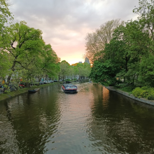

Home Page
The city of Amsterdam has a long and storied history, dating back to the 13th century. Amsterdam played a crucial role in the Dutch Golden Age and was a hub for trade, art, and culture during this period. Its historical heritage is evident in the well-preserved architecture, including iconic canal houses and landmarks like the Anne Frank House.
Amsterdam is often referred to as the "Venice of the North" due to its extensive network of picturesque canals, which crisscross the city. These canals are lined with historic buildings, tree-lined streets, and charming bridges, creating a unique and scenic urban landscape.
Bicycles are a common mode of transportation in Amsterdam, and the city is known for its bike-friendly infrastructure. The flat terrain and numerous bike lanes make it easy for both locals and visitors to explore the city on two wheels.
Amsterdam is a cultural melting pot, known for its diverse and inclusive culture. The city is home to world-class museums, such as the Rijksmuseum, the Van Gogh Museum, and the Stedelijk Museum, showcasing an impressive collection of art and history.
Amsterdam's blend of history, culture, and progressive values makes it a captivating destination for travelers seeking a mix of heritage, art, and modern urban experiences. Its charming canals, cultural landmarks, and friendly atmosphere continue to draw visitors from around the world.